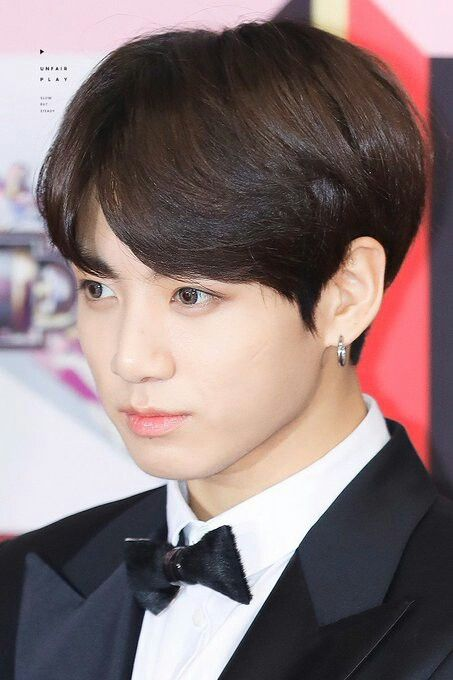
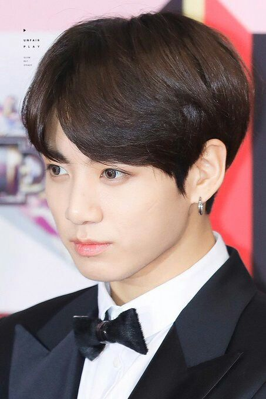

- TAMBIÉN TE INVITAMOS A VER MÁS SOBRE: (HAZ CLICK EN CUALQUIERA DE LAS IMÁGENES QUE SE ENCUENTRAN ABAJO)
Volver a la página principal "BTS 방탄소년단 aquí"
 RM |  JIN |  SUGA |  J-HOPE |  JIMIN |  JUNGKOOK |
Kim Tae-Hyun
박지민
25 años
30 de diciembre
1995
Capricornio
A
Kim Tae-Hyun, cuyo nombre artístico es V, es un cantante surcoreano. También ha participado en algunas novelas como actor y se dedica a componer algunos temas dentro de la banda. En el 2016 tuvo su primer papel como actor en el drama de época Hwarang: The Poet Warrior Youth. Su papel fue secundario.También colaboró con su compañero Jin, en un tema para la banda sonora del drama. Creció en el condado de Geochang, pero su nacimiento fue en el distrito Seo, en Daegu. Es el mayor de tres hijos. Uno de sus primeros acercamientos al arte fueron gracias a clases de saxofón, que su padre le insistió que tomara para empezar a buscar una carrera artística. Eventualmente, Tae-Hyun presentó una audición ante Big Hit Entertainment en Daegu, y entró al programa de trainees. Ha co-producido algunas canciones para el grupo, entre ellas Hold Me Tight y la letra para Fun Boyz. Tiene dos solos, Stigma y Singularity.
Luego de que salió su primera foto, se crearon cinco fanclubs dedicados a él.
Le gusta la carne y el japchae (un plato coreano elaborado con batata y fideo celofán, freídos en aceite de sésamo con carne de vaca y diversas verduras. Tiene un toque dulce).
Le gusta la música que nadie le conoce.Su número favorito es el 10.
Su color favorito es el gris.
Se muerde las uñas.
Su modelo a seguir es su padre.
Para BT21 de la línea (FRIENDS), el personaje que creó se llama Tata y es un alienígena que tiene la cabeza en forma de corazón.
Volver a la página principal "BTS 방탄소년단 aquí"
| RM | JIN | SUGA | J-HOPE | JIMIN |  JUNGKOOK |